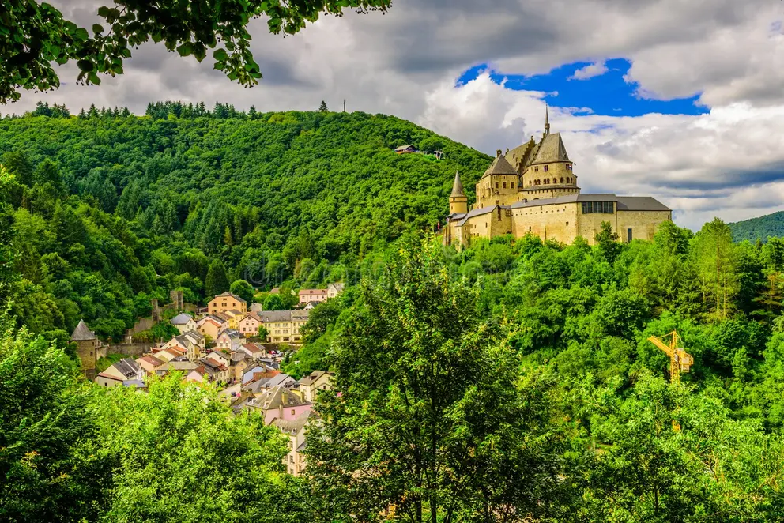
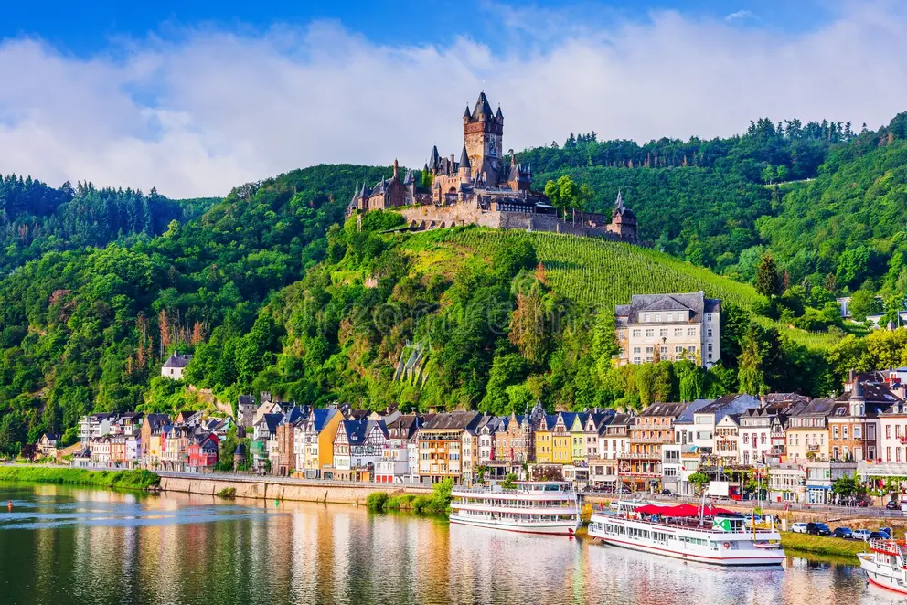
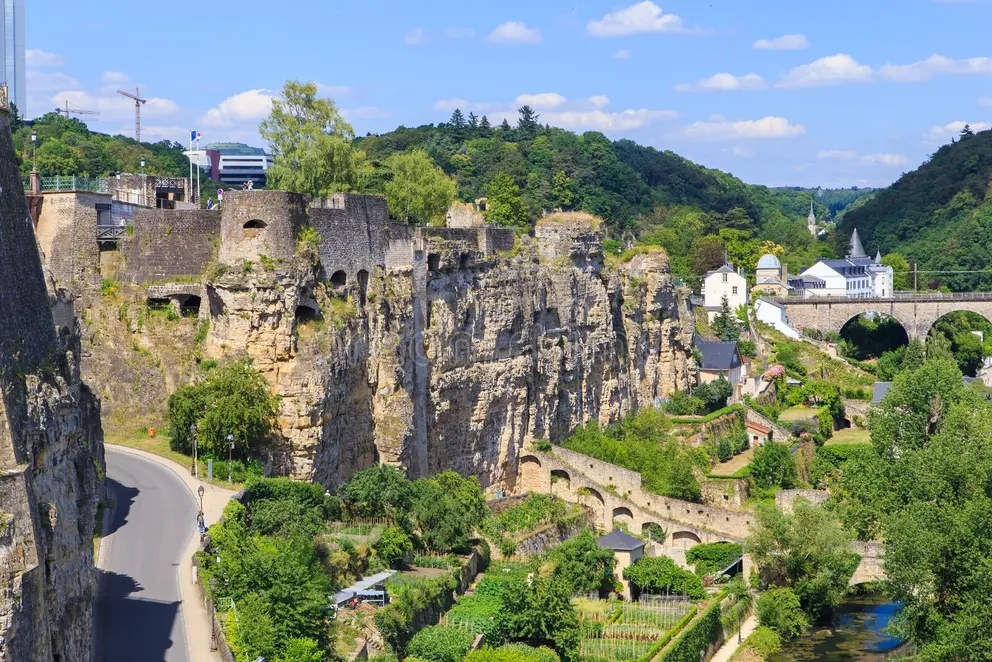
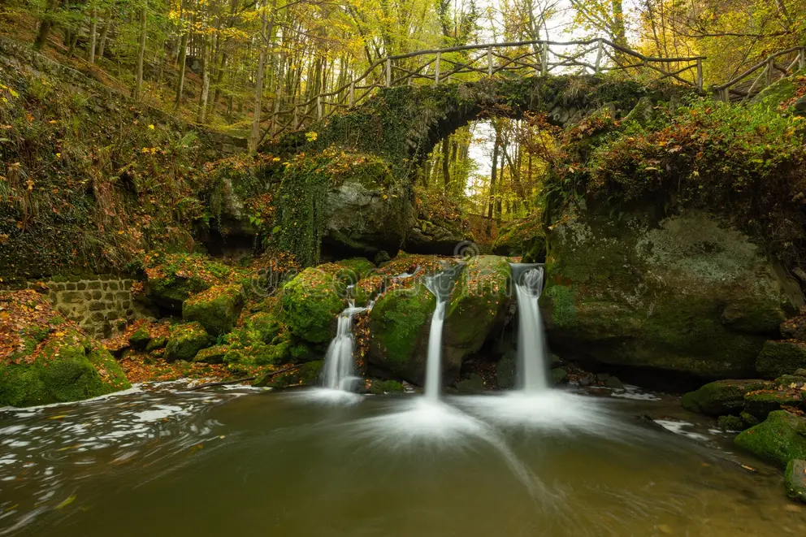

About Luxembourg
Luxembourg — officially the Grand Duchy of Luxembourg — is a small but extraordinary country nestled between Belgium, France, and Germany. Despite being one of the world's smallest nations, it is among the wealthiest per capita, home to the headquarters of the European Court of Justice, and a founding member of the European Union. Its capital, Luxembourg City, is a UNESCO World Heritage Site, famed for its dramatic Alzette valley, medieval fortifications, and the remarkable underground network of the Bock Casemates.
Luxembourg is a trilingual nation — Luxembourgish, French, and German are all official languages. Its landscape transitions from the rolling Ardennes forest in the north to the wine-producing Moselle valley in the east, offering visitors stunning nature alongside rich cultural history.
- Capital
- Luxembourg City
- Population
- ~660,000
- Area
- 2,586 km²
- Languages
- Luxembourgish, French, German
- Currency
- Euro (€)
- Government
- Constitutional Monarchy
- EU Member
- Since 1957
- Known For
- Finance, Castles, Forests
Places to See




 Weather
Weather
Weather
- Temperature
- 28°F / -2°C
- Wind Speed
- 12 mph
- Conditions
- Light Snow
- Wind Chill
- Calculating…